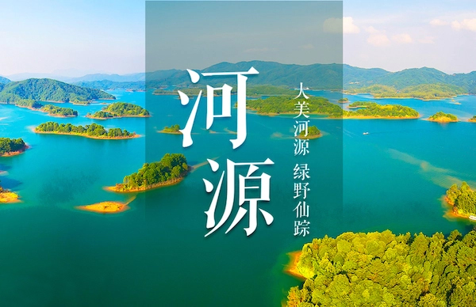

大美河源，绿野仙踪
水资源
河源市地表水资源的区域划分，原则上以单一大流域或若干小流域集合为界定进行划分。河源市划分为三个区域，分别是东江、韩江、北江流域。其中，东江流域13737平方千米，占全市总面积的87.3%，主要集中在东源、源城、龙川、连平、和平、紫金县境内；韩江流域1670平方千米，位于龙川、紫金境内，占全市总面积10.6%；北江流域326平方千米，主要位于连平县陂头镇、贵东镇境内，占全市总面积2.1%。
河源市地下水资源为 43.06亿立方米，其中东江流域为39.01亿立方米，韩江流域为3.32亿立方米，北江流域为0.728亿立方米
。河源市地处东江、韩江和北江中上游，境内河流蕴藏丰富的水力资源。经测算，全市水力资源理论蕴藏量为149.81万千瓦，可开发水力资源114.28万千瓦，其中单站装机容量5万千瓦以下的小水电可开发资源70.03万千瓦。至2008年，全市已开发小水电站装机容量38.68万千瓦
。
在生态环境部公布的2019年国家地表水考核断面水环境质量状况排名中，河源位列第13名 。
生物资源
河源市光、热、水资源丰富，动植物种类繁多。有野生植物280科、1645属、7055种；栽培植物633种，分隶于111科、361属；有真菌1959种，其中食用菌185种，药用真菌97种。植物种类中，有桫椤、银杉等国家一级保护植物，红豆杉、白豆杉等国家二级保护植物。
全市有陆生脊椎动物829种，其中兽类124种、鸟类510种、爬行类145种、两栖类50种；被列入国家一级保护的有蟒蛇等，被列入国家二级保护的有金猫、水鹿、穿山甲、猕猴和白鹇（省鸟）等。
矿产资源
河源市矿产资源丰富，矿类齐全，已发现矿产56种，矿产地262处，其中已探明储量矿产36种，主要有铁、铜、铅、锌、钨、锡、轻稀土、铀、萤石、水泥用灰岩、陶瓷土、冶金用白云岩、煤、钴、金、银、钽、铟、镉、耐火黏土、石墨、沸石、矿泉水、地热水、砖瓦用黏土等。其中大型矿床4处，中型矿床17处，小型矿床55处
。
主要的优势矿产为铁、钨、锡、瓷土、萤石等，探明铁矿储量2.83亿吨，占全省总量的39%，其中连平县大顶铁矿储量居全省第一；探明钨矿储量氧化钨24万吨，占全省总量的26.9%，其中连平县锯板坑钨矿是全省最大的大型钨矿；探明萤石矿储量685万吨，占全省总量的50.4%，其中东源县到吉萤石矿储量居全省第一
。